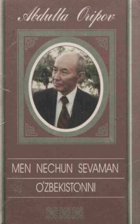

MNAbdulla Oripovning sara sheʼrlari va «Jannatga yoʻl» dramatik dostoni jamlangan saylanma.
Ushbu toʻplam Oʻzbekiston Qahramoni va xalq shoiri Abdulla Oripovning eng sara sheʼrlari hamda «Jannatga yoʻl» dramatik dostonini oʻz ichiga oladi. Kitob shoir ijodining turli davrlarida yozilgan eng muhim asarlarni jamlab, oʻquvchilarga muallifning badiiy olami bilan yaqindan tanishish imkonini beradi.